保留的五款覆盖完整的设计语言：玻璃卡基线（P01）、无卡裸字（P03/P10）、海报大字（P08）与中式题签钤印（P05）。P02/P04/P07/P09 与 P06（实色墨条）已裁撤，正式管线只实现这五款。选型规则见页底「选型策略」。
设计思路沿用现网底部毛玻璃卡的信息架构（文案在上、日期/地点分列左右）作为对照基线；改良点是卡片整体锚进相框安全区，四角圆角完整不再被遮。
设计思路无卡片，文字直接"长"在照片上，仅靠底部黑色渐变（scrim）托底，电影海报式左对齐。照片露出最大化，文字像写在照片背面的笔记。


设计思路中式「题签 + 钤印」：右侧近实心白签竖排文案，红印章落地名「厦门」（去行政后缀，与签面等宽横排小篆），日期退到左下角——复刻传统卷轴的观看秩序。竖排天然要求短句，与 VLM 生成的诗意文案最搭。
设计思路日期即图形：把「6.1」放大到 84px 当画面元素用，年份缩小垫在其上，文案以小字在左下收尾。远看是海报，近看是日记，日期本身成为构图的一半。
设计思路居中电影字幕式：文案与日期地点沿中轴收在底部渐变上，完全对称、没有任何几何卡片，画面的「完整感」最好。居中排版对中文长句也最宽容，左右不破相。
横屏可视区是 720×480 的 3:2 横带，左右两端各被相框遮 40px。保留的七款 = 与竖屏同语言的基线卡（L01）、字幕（L04），加上横屏专属的侧栏（L02）、报尾条（L05）、顶签（L06）、落款钤印（L07）与中央铭牌（L10）；L03/L09 因与 L02 及居中方案定位重叠、L08（墨条）不合适，均已裁撤。所有方案的文字左右边界都收在 40px 遮挡线以内。
设计思路现网横屏方案原样收录作对照：3D 玻璃卡（外投影 + 白高光边 + alpha 180 毛玻璃），文案两行 + 日期/地点左右分列，左右边界已收进 40px 遮挡线。
设计思路文字收进左侧一根通高栏，照片在右侧 3/4 完整叙事——美术馆墙上「作品 + 标签」的关系。字段纵向排布（日期/星期/红色分隔线/文案/城市），是信息层级最完整的一款。
设计思路居中底部字幕 + 渐变托底，最「无声」的方案——文字退到介质边缘，只在被需要时被阅读。横屏宽幅让居中字幕的舞台感比竖屏更强。
设计思路底部一条 64px 实白横带，日期—竖线—文案—城市从左到右排开，像报纸的报尾。信息密度最高、竖向最省，一条带解决全部字段，其余 87% 画布还给照片。
设计思路从可视区顶边垂下一张挂签，日期、星期、红色短线、文案自上而下——展览入口导视牌的语汇。文字占据通常最空的左上角，照片重心自然沉到画面下半。


设计思路国画落款：文案、日期右对齐收在右下，末尾一枚竖排朱印压轴——最东方、最留白的横屏方案。整幅画面几乎不被文字打扰，地址化作文字右侧一方与文本等高的小篆印章。
设计思路底部居中一块实体白铭牌：日期、红色细线、文案纵向排列——博物馆主展品的仪式感。对称构图的建筑、正面人像与它最配，横平竖直的版式稳住整个画面。
渲染时按照片自身的「格局」挑版式。不需要任何新的照片分析——信号全部来自现有管线：choose_gamma 已经算好的亮度估计、YOLO subjects_json、VLM 的 type / caption、库里的 memory_score。逻辑是「加分制打分 + 硬否决 + 确定性平局」，约 40 行 Python，先打分选型、再按所选版式决定裁切避让方向。
| 信号 | 含义 | 来源 |
|---|---|---|
| I 亮度 | 高调 I≥0.55 / 低调 I≤0.35 / 其余为中间调 | choose_gamma 的 predicted_white_ratio（已实现） |
| S 主体占比 | 最大主体的画面面积占比，S≥0.12 视为大主体 | subjects_json（conf≥0.2 才计入） |
| cx / cy | 最大主体的重心位置（归一化 0–1） | subjects_json bbox 中心 |
| 对称 | |cx−0.5|<0.08 且 S≥0.08（合影 / 正面建筑） | 同上推导 |
| 风格标签 | 中国风（古镇/园林/庙/塔/水乡）、雪、夜景、风光 | type + exif_city + caption 关键词匹配 |
| memory_score | ≥85 视为「纪念日级」照片，配仪式感版式 | photos.db 已有 |
| 版式 | 加分 | 减分 / 否决 |
|---|---|---|
| P01 玻璃卡 | 基线起评 1.0；中间调 +0.3；无主体 +0.2 | 主体压底（S≥0.12 且 cy>0.6）−0.8 |
| P03 角落手记 | 低调 +1.0；主体不在左下 +0.5；无主体 +0.2 | 高调 −0.6（亮底白字吃力） |
| P05 题签钤印 | 高调 +1.0（浅底白签）；中国风 +0.9；主体偏左 +0.5 | 主体偏右（cx>0.6）或无城市 → 否决；低调 −0.3 |
| P08 大字日期 | 主体偏左 +0.9；简洁留白（I>0.45 且 S<0.12）+0.6；memory≥85 +0.3 | 主体偏右 −0.8 |
| P10 全幅字幕 | 对称 +1.0；居中大主体 +0.6；低调 +0.4 | 主体压底（cy>0.65）−0.4 |
| 版式 | 加分 | 减分 / 否决 |
|---|---|---|
| L01 玻璃卡 | 基线起评 1.0；中间调 +0.3；无主体 +0.2 | 主体压底 −0.6 |
| L02 左侧信息栏 | 主体偏右或无主体 +0.9；小主体 +0.5；风光类 +0.5 | 主体偏左（cx<0.4）→ 否决 |
| L04 电影字幕 | 低调 +0.9；对称居中 +0.7 | 高调 −0.5；主体压底 −0.5 |
| L05 报纸横条 | 高调 +1.0（实白条和谐）；主体压底 +0.5（64px 条遮挡最小） | 低调 −0.3（暗照片上白条刺眼） |
| L06 顶签悬挂 | 主体偏下（cy>0.55）+1.0；上部留白（无主体）+0.4 | 主体偏上（cy<0.4）→ 否决 |
| L07 落款钤印 | 低调 +1.1；中国风 +0.9；小主体 +0.3 | 高调 −0.7；无城市 → 否决 |
| L10 中央铭牌 | 对称 +1.0；居中大主体 +0.5；建筑/园林 +0.2 | 主体明显偏侧（|cx−0.5|>0.25）−0.5 |
hash(照片路径 + 拍摄日期) 挑选——同一照片每次渲染永远得到同一版式（刷屏不跳变），不同照片之间分布均匀、不刻板。import hashlib
def pick_layout(item, ori, white_ratio):
sub = largest_subject(item["subjects_json"]) # conf>=0.2，person/cat/dog 加权取最大
S = sub.area if sub else 0.0 # 最大主体面积占比
cx, cy = (sub.cx, sub.cy) if sub else (0.5, 0.5)
tags = style_tags(item) # .zh / .snow / .night / .travel 关键词命中
sym = abs(cx - 0.5) < 0.08 and S >= 0.08
I = white_ratio # choose_gamma 已算好
hi, lo = I >= 0.55, I <= 0.35
if ori == "portrait":
sc = {
"P01": 1.0 + .3*(not hi and not lo) + .2*(not sub) - .8*(S>=.12 and cy>.6),
"P03": 1.0*lo + .5*(cx>.35 or cy<.55) + .2*(not sub) - .6*hi,
"P05": 1.0*hi + .9*tags.zh + .5*(cx<.45) - .3*lo,
"P08": .9*(cx<.4) + .6*(I>.45 and S<.12) + .3*(item["memory_score"]>=85) - .8*(cx>.6),
"P10": 1.0*sym + .6*(S>=.12 and abs(cx-.5)<.15) + .4*lo - .4*(cy>.65),
}
veto = {"P05": cx > .6 or not city or n_chars > 18,
"P01": n_chars > 18, "P10": n_chars > 18}
base = "P01"
else:
sc = {
"L01": 1.0 + .3*(not hi and not lo) + .2*(not sub) - .6*(S>=.12 and cy>.6),
"L02": .9*(cx>.55 or not sub) + .5*(S<.12) + .5*tags.travel - .9*(cx<.4),
"L04": .9*lo + .7*sym - .5*hi - .5*(cy>.6),
"L05": 1.0*hi + .5*(cy>.6) - .3*lo,
"L06": 1.0*(cy>.55) + .4*(not sub),
"L07": 1.1*lo + .9*tags.zh + .3*(S<.12) - .7*hi,
"L10": 1.0*sym + .5*(S>=.12 and abs(cx-.5)<.15) + .2*tags.zh - .5*(abs(cx-.5)>.25),
}
veto = {"L02": cx < .4, "L06": cy < .4, "L07": not city}
base = "L01"
for k, bad in veto.items():
if bad: sc[k] = -9.0
top = max(sc.values())
if top <= 0: return base
sym, n_chars = abs(cx-.5)<.08 and S>=.08, disp_width(item["side"])
if len(best) == 1: return best[0]
h = hashlib.md5(f"{item['path']}|{item['date']}".encode()).hexdigest()
return best[int(h, 16) % len(best)]
# 选型之后：把版式对应的避让传给 compute_crop_window
# P01 bottom_reserve=130 / L05 无需避让 / P05 right_reserve=110
# L01 bottom_reserve=110 / L02 left_reserve=190 / L06 top_reserve=180 ...
config.py 增加 TEXT_LAYOUT（竖屏 5 / 横屏 7 个枚举值）；render_daily_photo.py 的 render_image / render_image_landscape 改为按枚举分发到独立小函数，每款一个函数，共享 _get_font / wrap_text_chinese / 毛玻璃 / scrim / 印章五个工具件。compute_crop_window 增加 top_reserve / left_reserve / right_reserve（现仅 bottom_reserve），L2/L6 等「非底部占位」方案才能不压主体；实色条方案（L05）条身不透明，避让可给 0。